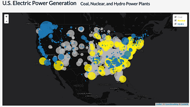

MAP 672: Programming for Web Mapping
Web Cartography at the University of Kentucky

This map shows the differences betweens bus stops in Albuquerque listed within OpenStreetMap and the City of Albuquerque's public website.
This map was generated using QGIS 2.10. OpenStreetMap data was harvested using the QuickOSM feature. Common geoprocessing tools such as clips and buffers were also used.

This map highlights both famous folks from the Bluegrass and top Kentucky tourist destinations.
This map was generated using QGIS 2.10 and CartoDB. Addresses were compiled through various sources and geocoded through the MMQGIS plug-in. Both point data and the choropleth maps were altered utilizing CSS and HTML within CartoDB. Ratios were compiled through the QGIS field calculator.

This map displays electric power generation for coal, hydro, and nuclear power plants in the United States.
This map was generated using Leaflet. Clicking a location on the map highlights a 500 kilometer buffer around the click point and displays only power plants within that buffer. Clicking on a proportional symbol representing each power plant displays a pop-up window listing the name of the power plant, the amount of power generated, and its distance from the click point.